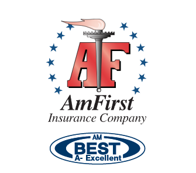
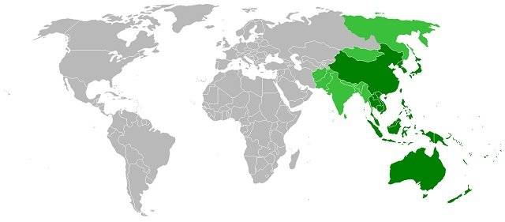
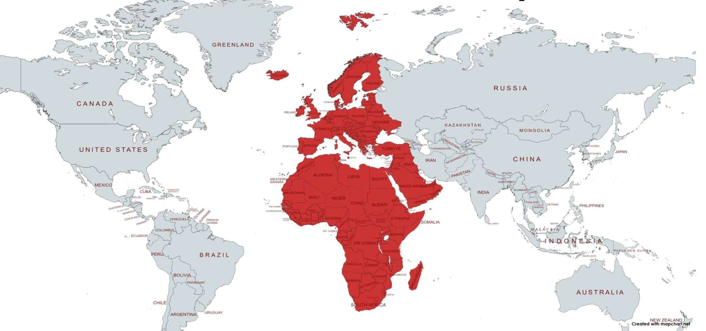
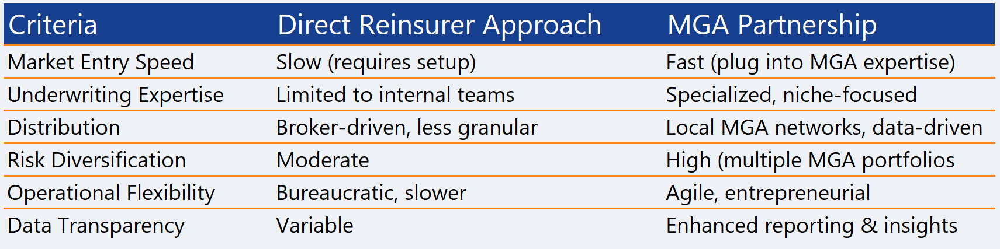

Achieve success through our strategic partnership. Aurinko Re operates as a specialized Credit & Surety reinsurance MGA, combining underwriting discipline, actuarial rigor and deep market relationships across Europe and Asia.
Aurinko Re combines reinsurance underwriting, actuarial capability, market intelligence and long-standing relationships with carriers, reinsurers and regulators to identify and structure high-value treaty opportunities under a disciplined appetite.
We operate as a specialized Reinsurer-MGA with a clear focus on Credit and Surety reinsurance treaties. Our approach blends technical analysis, placement discipline and long-term partnership thinking.
This combination allows us to navigate complex markets, secure optimal capacity and deliver disciplined underwriting performance as a trusted partner for sustainable, profitable growth.
AURINKO RE strong partner AmFirst Specialty Insurance is USA Reinsurer, rated A- AM BEST.

Aurinko Re is a specialised reinsurance MGA focused on Credit and Surety reinsurance.


We operate across EMEA and APAC, combining technical underwriting discipline, actuarial capability and strong market relationships.
Our underwriting focus includes a broad range of surety classes, including construction, advance payment, customs, tax, renewable energy and other commercial bond solutions.
To provide disciplined and structured Credit & Surety reinsurance solutions in profitable portfolios which support sustainable growth.
To be a trusted reference in Credit & Surety reinsurance, recognized for underwriting excellence and long-term partnerships.
Tailored treaty structures adapted to portfolio profile, retention objectives and capital needs.
Clear underwriting guidelines aligned with growth strategy, tenors, exposure limits and profitability targets.
Strong relationships across insurers, reinsurers and brokers to support efficient placement and trust.
Real-time monitoring mindset, data visibility and structured reporting that align interests across stakeholders.

Alignment with your growth strategy
Respect of tenors and target profitability
Capital adequacy for exposures
Scenario modelling and stress tests
Multidisciplinary team combining underwriting, actuarial, data and claims capabilities.

Mastère en Management financier international.
Green Belt Six Sigma
+30 years international experience
Senior Reinsurance Underwriter in Surety, Credit, Mortgage & Political Risk. Experience at Beazley Re (Lloyd’s syndicate), Arundo Re, QBE Insurance, CESCE and General Electric.
Based in Paris, France.
Mobile: +33 645 55 43 60
Email: yamilet.morote@aurinkore.com
Master of Science (MS) in Actuarial Science.
25+ years of experience with senior roles at Swiss Re and Nacional de Reaseguros, managing portfolios over EUR 360 million.
55M+ in intermediated premiums across all reinsurance lines.
Based in Madrid, Spain.
Mobile: +34 637 535 132
Email: cristina.rivas@aurinkore.com